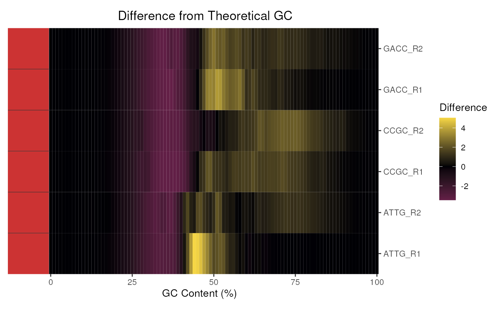

Plot the Per Sequence GC Content for a set of FASTQC files
plotGcContent(x, usePlotly = FALSE, labels, pattern = ".(fast|fq|bam).*", ...)
# S4 method for ANY
plotGcContent(x, usePlotly = FALSE, labels, pattern = ".(fast|fq|bam).*", ...)
# S4 method for FastqcData
plotGcContent(
x,
usePlotly = FALSE,
labels,
pattern = ".(fast|fq|bam).*",
theoreticalGC = TRUE,
gcType = c("Genome", "Transcriptome"),
species = "Hsapiens",
GCobject,
plotlyLegend = FALSE,
Fastafile,
n = 1e+06,
counts = FALSE,
scaleColour = NULL,
lineCols = c("red3", "black"),
linetype = 1,
linewidth = 0.5,
...
)
# S4 method for FastqcDataList
plotGcContent(
x,
usePlotly = FALSE,
labels,
pattern = ".(fast|fq|bam).*",
theoreticalGC = TRUE,
gcType = c("Genome", "Transcriptome"),
species = "Hsapiens",
GCobject,
Fastafile,
n = 1e+06,
plotType = c("heatmap", "line", "cdf"),
cluster = FALSE,
dendrogram = FALSE,
heat_w = 8,
pwfCols,
showPwf = TRUE,
scaleFill = NULL,
scaleColour = NULL,
plotlyLegend = FALSE,
lineCols = RColorBrewer::brewer.pal(12, "Paired"),
linetype = 1,
linewidth = 0.5,
...
)
# S4 method for FastpData
plotGcContent(
x,
usePlotly = FALSE,
labels,
pattern = ".(fast|fq|bam).*",
theoreticalGC = TRUE,
gcType = c("Genome", "Transcriptome"),
species = "Hsapiens",
GCobject,
Fastafile,
n = 1e+06,
plotType = "bar",
scaleFill = NULL,
plotlyLegend = FALSE,
plotTheme = theme(),
...
)
# S4 method for FastpDataList
plotGcContent(
x,
usePlotly = FALSE,
labels,
pattern = ".(fast|fq|bam).*",
theoreticalGC = TRUE,
gcType = c("Genome", "Transcriptome"),
species = "Hsapiens",
GCobject,
Fastafile,
n = 1e+06,
plotType = "bar",
scaleFill = NULL,
plotTheme = theme(),
plotlyLegend = FALSE,
...
)Arguments
- x
Can be a
FastqcData,FastqcDataListor character vector of file paths- usePlotly
logicalDefaultFALSEwill render using ggplot. IfTRUEplot will be rendered with plotly- labels
An optional named vector of labels for the file names.
- pattern
Pattern to remove from the end of filenames
- ...
Used to pass various potting parameters to themes and geoms.
- theoreticalGC
logicaldefault isFALSEto give the true GC content, set toTRUEto normalize values of GC_Content by the theoretical values usinggcTheoretical().speciesmust be specified. For Fastqc* objects, the entire distributions will be used, wheras for the Fastp* objects, only the expected mean value is shown as a horizontal line- gcType
characterSelect type of data to normalize GC content against. Accepts either "Genome" (default) or "Transcriptome".- species
characterifgcTheoryisTRUEit must be accompanied by a species. Species currently supported can be obtained usingmData(gcTheoretical)- GCobject
an object of class GCTheoretical. Defaults to the gcTheoretical object supplied with the package
- plotlyLegend
logical(1) Show legend on interactive line plots
- Fastafile
a fasta file contains DNA sequences to generate theoretical GC content
- n
number of simulated reads to generate theoretical GC content from
Fastafile- counts
logical. Plot the counts from each file ifcounts = TRUE, otherwise frequencies will be plotted. Ignored if calling the function on a FastqcDataList.- scaleColour
ggplot2 scale for line colours
- lineCols, linetype, linewidth
Line colour type and width for observed and theoretical GC lines
- plotType
Takes values "line", "heatmap" or "cdf"
- cluster
logicaldefaultFALSE. If set toTRUE, fastqc data will be clustered using hierarchical clustering- dendrogram
logicalredundant ifclusterisFALSEif bothclusteranddendrogramare specified asTRUEthen the dendrogram will be displayed.- heat_w
Relative width of any heatmap plot components
- pwfCols
Object of class
PwfCols()to give colours for pass, warning, and fail values in plot- showPwf
logical(1) Show Pwf Status on the plot
- scaleFill
ggplot2 scale for filling heatmap cells or bars
- plotTheme
theme object
Value
A ggplot2 or plotly object
Details
Makes plots for GC_Content. When applied to a single FastqcData object a simple line plot will be drawn, with Theoretical GC content overlaid if desired.
When applied to multiple FastQC reports, the density at each GC content bin
can be shown as a heatmap by setting theoreticalGC = FALSE. By
default the difference in observed and expected theoretical GC is shown.
Species and genome/transcriptome should also be set if utilising the
theoretical GC content.
As an alternative to a heatmap, a series of overlaid distributions can be
shown by setting plotType = "line".
Can produce a static ggplot2 object or an interactive plotly object.
Examples
# Get the files included with the package
packageDir <- system.file("extdata", package = "ngsReports")
fl <- list.files(packageDir, pattern = "fastqc.zip", full.names = TRUE)
# Load the FASTQC data as a FastqcDataList object
fdl <- FastqcDataList(fl)
# The default plot for a FastqcDataList
plotGcContent(fdl)

# Plot a single FastqcData object
plotGcContent(fdl[[1]])